FoodLuck MEO 操作説明書 16
データダウンロード
インサイト・順位データをCSVで出力し、月次レポートや店舗改善に使うための実務マニュアル
| この資料の目的 データダウンロードは、FoodLuck MEOの画面で見ている数値をCSVとして出力し、月次報告や店舗別の比較に使うための機能です。この資料では、どの画面から何を出すか、出した数字をどう読むかまでまとめます。 |
|---|
| 操作前の注意 CSVダウンロード自体は外部公開される操作ではありません。ただし、対象店舗・期間・ランキング条件を間違えると、会議資料や判断材料の数字がずれます。対象店舗、期間、ランキング指定、ファイル形式を確認してから出力してください。 |
|---|
1. データダウンロードでできること
データダウンロードでは、順位データとインサイトデータをCSVで出力できます。店舗現場では毎日使う機能ではありませんが、月次確認や本部への報告、複数店舗の比較では重要です。
| 出力するデータ | 分かること | 主な使い方 | 注意点 |
|---|---|---|---|
| キーワード別ランキングデータ | キーワードごとの順位 | MEO対策キーワードの月次確認 | ランキング指定の初期値に注意 |
| インサイト CSV | 閲覧、検索、電話、ルート、Webクリックなど | 集客反応の確認、店舗別比較 | Google側の反映遅れを考慮 |
| パフォーマンスレポート CSV | 選んだインサイト項目の一覧 | 会議資料、数値管理表の作成 | 項目選択漏れに注意 |
| 複数店舗データ | 全権アカウントで見られる店舗の一括出力 | 多店舗管理、エリア比較 | 権限と対象店舗を確認 |
| 3位以内率の集計 | 順位が3位以内に入った割合 | 順位改善の成果確認 | Excelでの加工が必要 |
2. どの画面からダウンロードするか
出力したい内容によって、開く画面が変わります。店舗が1つだけなら個店ページ、多店舗をまとめる場合はグループや複数店出力を使います。
| やりたいこと | 開く画面 | 使う人 |
|---|---|---|
| キーワード順位を出す | 順位レポート > データダウンロード | 店舗担当者、本部担当者 |
| インサイトを出す | Googleデータ連携 > Googleインサイト > データダウンロード | 店舗担当者、本部担当者 |
| グループ単位で出す | グループ画面のデータダウンロード | 複数店舗管理者 |
| 閲覧・編集できる全店舗を出す | 個店ページから出力範囲を「複数店」にする | 全権アカウント以上 |
| 指定店舗だけまとめて出す | グループ機能で対象店舗をまとめてから出力 | 本部担当者、FoodLuck側 |
| 権限の目安 個店ページから複数店舗データを一括で出す場合は、FAQ上では「全権アカウント」以上でログインする必要があると案内されています。表示されない場合は権限不足の可能性があるため、FoodLuck側へ確認してください。 |
|---|
3. グループ画面でデータをダウンロードする
グループ画面では、グループにまとめた店舗を対象に、キーワード別ランキングデータとインサイトCSVを出力できます。エリア別やブランド別に数字を見たい時に使います。
3-1. キーワード別ランキングデータ
1. 左側ナビゲーションから「Googleインサイト」>「データダウンロード」を開く。
2. 「キーワード別ランキングデータ」で、期間を選ぶ。
3. ランキング、対象媒体、フォルダ（グループ）、出力ファイル形式を指定する。
4. 「CSVダウンロード」を押す。
5. ステータス画面へ移動し、出力完了後のCSVをダウンロードする。
FAQ画像: キーワード別ランキングデータの出力条件
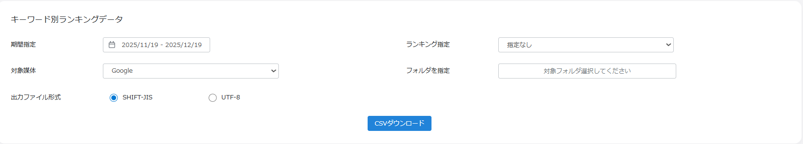
・期間、ランキング、媒体、フォルダ（グループ）、ファイル形式を指定します。
・月次確認では、対象期間が先月1日から末日になっているか確認します。
3-2. インサイト・パフォーマンスレポート CSV
1. 左側ナビゲーションから「Googleインサイト」>「データダウンロード」を開く。
2. データ表示形式、期間、対象媒体、対象店舗、フォルダ（グループ）、出力ファイル形式を指定する。
3. 出したいインサイト項目にチェックを入れる。
4. 「CSVダウンロード」を押す。
5. ステータス画面で出力完了後のCSVをダウンロードする。
FAQ画像: パフォーマンスレポート CSVの項目選択
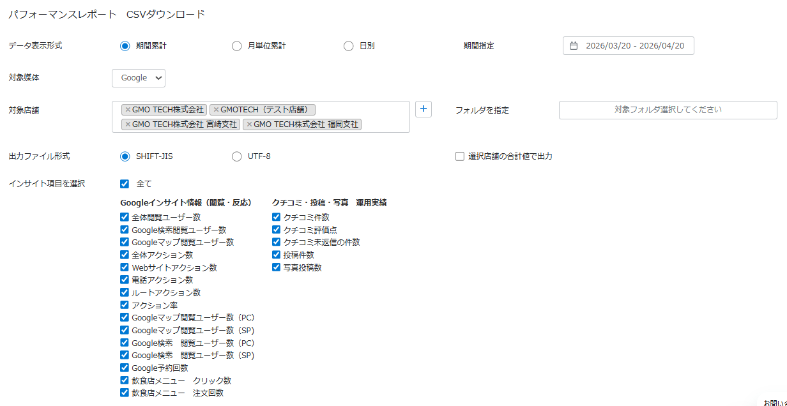
・電話、ルート、Webクリック、閲覧など、必要な項目を選びます。
・会議用に使う時は、毎月同じ項目で出すと比較しやすくなります。
4. 複数店舗データを一括で出す
複数店舗を管理している場合は、出力範囲を「複数店」にすることで、閲覧・編集できる店舗データをまとめて出力できます。
1. 全権アカウント以上でログインする。
2. 順位データは「順位レポート」>「データダウンロード」を開く。
3. インサイトデータは「Googleデータ連携」>「Googleインサイト」>「データダウンロード」を開く。
4. 出力範囲を「複数店」にする。
5. 期間、媒体、ランキングなど必要条件を指定し、CSVをダウンロードする。
FAQ画像: 個店ページから複数店舗データを出す入口
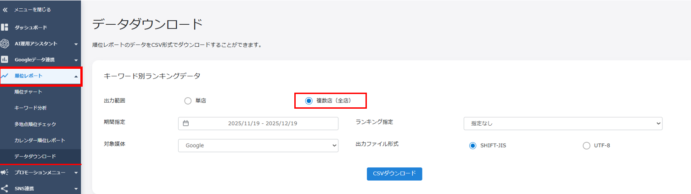
・左側メニューからデータダウンロード画面を開きます。
・複数店舗の一括出力は権限が必要です。
FAQ画像: 出力範囲を複数店にする
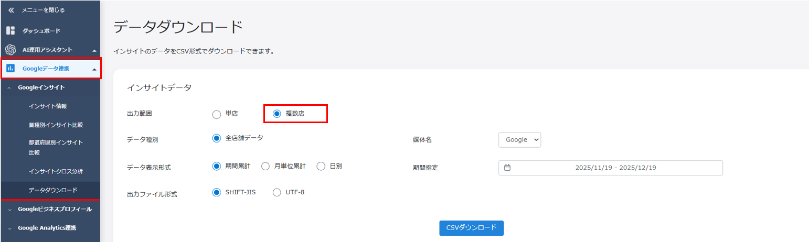
・出力範囲を「複数店」にすると、閲覧・編集できる店舗のデータをまとめて出せます。
・全店舗ではなく指定店舗だけにしたい場合は、グループ機能を使います。
| 業種別データとは 出力範囲を複数店にすると、「店舗基本情報」に登録されている業種ごとにまとめたデータを出せます。例えば複数業態を運営している場合、居酒屋、カフェ、テイクアウト店など業態別に反応を見たい時に便利です。 |
|---|
FAQ画像: 複数店出力時の業種別
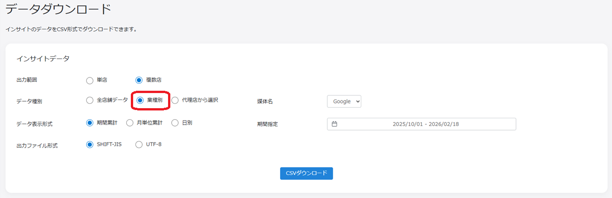
・業種別は、店舗基本情報の業種をもとに集計されます。
・業種の登録がずれていると集計もずれるため、店舗基本情報の確認が大切です。
5. ダウンロードした数字の読み方
5-1. 平均値の考え方
FAQでは、平均値は「対象インサイト情報の合計」÷「指定期間の日数」で算出されると案内されています。指定期間が当日までの場合は、直近5日を除いて算出されます。
| 例 | 計算 | 読み方 |
|---|---|---|
| 全体閲覧ユーザー数 621 | 621 ÷ 27日 = 23 | 1日平均で約23人が見た、という目安 |
| 指定期間 2025/12/20-2026/1/20 | 32日 - 直近5日 = 27日 | 当日まで指定すると直近5日を除く |
5-2. 「-」表示の意味
順位チャートのダウンロードデータで「-」が出る場合は、検索時に60位まで確認しても順位が確認できなかったため、ランク外として扱われている状態です。
| 確認が必要なケース 同じ日付の順位チャートではランク外ではないのに、ダウンロードデータだけ「-」になっている場合は、FoodLuck側へ確認してください。 |
|---|
5-3. キーワードが全部出ない時
キーワード別ランキングデータで登録キーワードを選んでいるのにすべて出ない時は、ランキング指定が初期値の「3位以内」になっている可能性があります。ランキング指定を「指定なし」にして再度出力します。
FAQ画像: ランキング指定を確認する
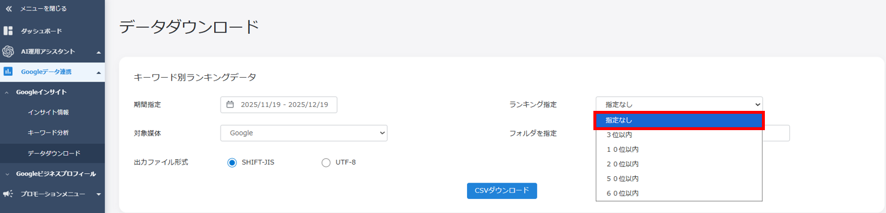
・初期値が3位以内になっている場合、対象外のキーワードが出ないことがあります。
・すべて確認したい時は「指定なし」を選びます。
6. 店舗別の3位以内率を出す
3位以内率は、登録キーワードが指定期間中どれくらい3位以内に入ったかを見る指標です。FoodLuck MEOからCSVを出した後、Excelで加工して算出します。月次報告や改善成果の確認に向いています。
1. 「順位レポート」>「データダウンロード」で、キーワード別ランキングデータをダウンロードする。
2. 期間を絞り込み、ランキング指定は「指定なし」にする。
3. CSVをExcelで開く。
4. 「データの個数」を COUNTA 関数で作る。
5. 「3位以内の個数」を COUNTIF 関数で作る。
6. ピボットテーブルを作成する。
7. 集計フィールドで「3位以内の個数 / データの個数」を作る。
8. 行に店舗名やキーワード、値にデータの個数・3位以内の個数・割合を入れる。
9. 割合をパーセント表示に整える。
FAQ画像: ランキング指定なしでCSVを出す
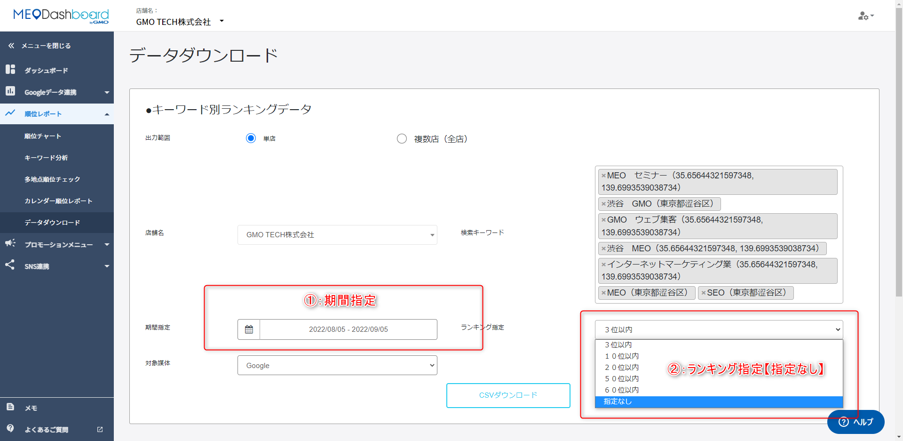
・3位以内率を自分で算出する場合は、ランキング指定を「指定なし」にします。
・最初から3位以内だけで出すと、分母がずれてしまいます。
| 作る列 | Excel関数 | 意味 |
|---|---|---|
| データの個数 | =COUNTA(範囲) | 順位データが何日分あるかを見る |
| 3位以内の個数 | =COUNTIF(範囲,"<=3") | 3位以内になった日数を数える |
| 割合 | 3位以内の個数 / データの個数 | 期間中に3位以内だった割合 |
FAQ画像: COUNTAでデータ数を数える
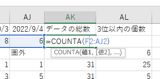
・データの個数は、日数や順位データの数を確認するために使います。
・範囲指定を間違えると全体の割合が変わるため注意します。
FAQ画像: COUNTIFで3位以内を数える
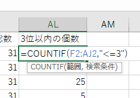
・条件は「<=3」と入力します。
・FAQでも、ダブルクォーテーションを忘れやすい点に注意と案内されています。
FAQ画像: ピボットテーブルを作成する
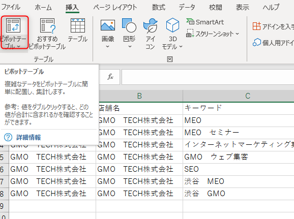
・Excelの「挿入」からピボットテーブルを作成します。
・店舗別、キーワード別など、見たい単位で集計できます。
FAQ画像: 集計フィールドで割合を作る
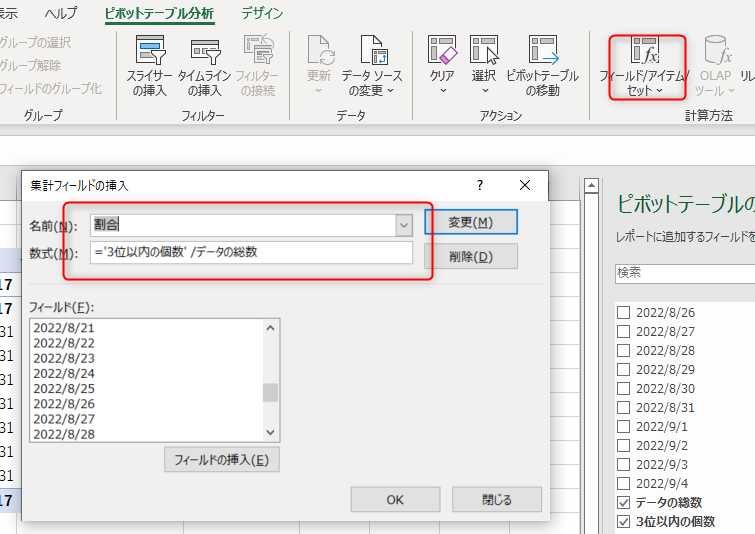
・数式には「3位以内の個数 / データの個数」を入れます。
・割り算の記号「/」を入れ忘れないようにします。
FAQ画像: 3位以内率をパーセント表示に整える
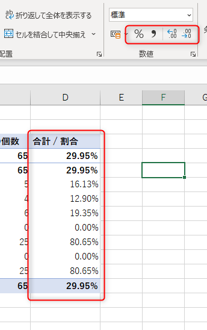
・最後に表示形式をパーセントにすると、会議資料で見やすくなります。
・店舗別に見る時は、順位だけでなく投稿・写真・クチコミの運用状況も一緒に確認します。
7. 自動レポートとFoodLuckへの相談
データダウンロード以外にも、毎月5日に自動で送付されるPDFレポート機能があります。必要な場合は販売店側で対応する案内になっているため、FoodLuckへご相談ください。
・契約内容によって、レポート送付ができない場合があります。
・店舗側でCSV加工が難しい場合は、FoodLuck側でレポート化できるか相談してください。
・毎月同じ条件で出力すると、前月比較や改善確認がしやすくなります。
8. 月次データ確認チェックリスト
□ 対象期間が正しい（例: 先月1日から末日）
□ 対象店舗・グループが正しい
□ キーワード別ランキングデータは、必要に応じてランキング指定を「指定なし」にしている
□ インサイト項目のチェック漏れがない
□ 複数店出力の場合、権限と出力範囲を確認した
□ 平均値を見る時は、当日まで指定した場合の直近5日除外を理解している
□ 「-」表示はランク外として扱い、画面表示と矛盾する時はFoodLuckへ確認する
□ 3位以内率を出す時は、分母と分子の範囲が同じになっている
□ CSVを会議資料に使う前に、店舗名、期間、媒体、集計条件を確認した
| 現場に伝える時のポイント 数字は、現場を責めるためではなく、次の一手を決めるために使います。順位が落ちた時は、写真、投稿、クチコミ返信、店舗情報の更新状況も一緒に確認すると、改善すべき場所が見えやすくなります。 |
|---|
9. この資料に反映したFAQ記事
| No. | FAQ記事 | 本文での反映先 |
|---|---|---|
| 1 | ダウンロードしたデータの平均値について | 5. 数字の読み方 |
| 2 | 【グループ】データのダウンロード方法 | 3. グループ画面でダウンロード |
| 3 | 店舗別の3位以内率を抽出する方法（自分で算出する方法） | 6. 3位以内率 |
| 4 | データダウンロード以外のレポート機能 | 7. 自動レポート |
| 5 | Googleインサイトデータのダウンロード時に、「出力範囲」を複数店に設定した場合、「データ種別」に表示される、「業種別」とは | 4. 複数店舗・業種別 |
| 6 | 個店ページから複数店舗データを一括ダウンロードする方法 | 4. 複数店舗データ |
| 7 | ダウンロードしたデータの「-」表示について | 5. 「-」表示 |
| 8 | データダウンロードの「キーワード別ランキングデータ」の出力時、登録キーワードをすべてダウンロードできない場合 | 5. キーワードが出ない時 |